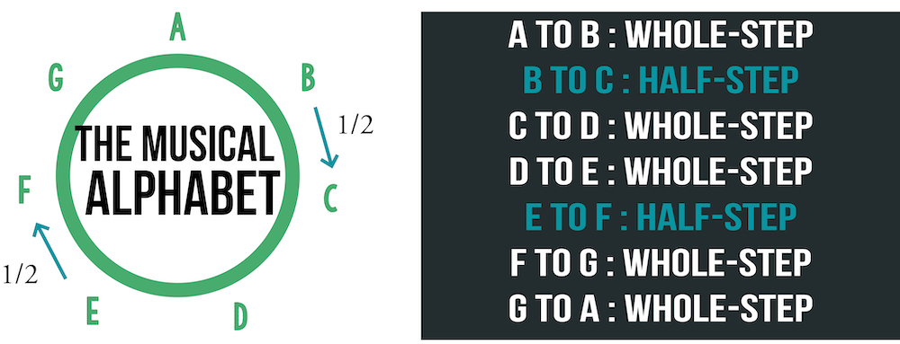
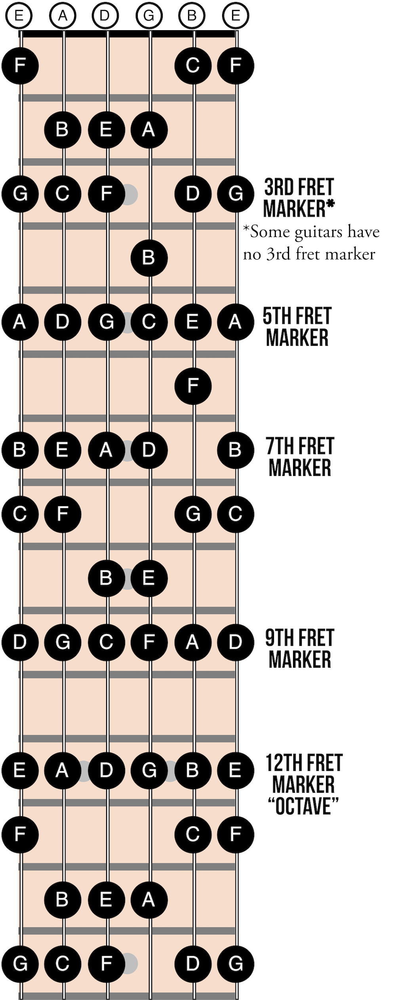

Guitar geography
Learning the note names all over the guitar neck is extremely important but often overlooked. This vital step will guide you toward gaining a full understanding of the instrument. An interval is the distance from one note to the next. The first two intervals to learn are the half-step and the whole-step.
Half-step: one fret
Open string to first fret
First fret to second fret etc.
Whole-step: two frets
First fret to third fret
Third fret to fifth fret
etc.
The interval between most notes in the musical alphabet is a whole-step. For instance, A to B and C to D are both whole-steps. The two special cases of half-steps are between the notes E to F and B to C.
**A useful trick to remember the half-steps is to use the names of the first and second open strings: E and B. Half-steps occur from these two notes.
The notes you have learned so far are called natural notes. Use the open string names you already know (E-A-D-G-B-E) to learn the natural notes up and down each string. Begin with the open-string letter and continue around the musical-alphabet circle.
Be sure to remember the half-steps (one fret) from E to F and B to C.
The interval between all other notes is a whole-step (two frets).
Use the fret markers to help orient which fret you are on.
The twelfth fret of each string is the same note name as that open string.
Going around the circle and through the entire musical alphabet will bring you back to the original note. This interval is called an octave.
The notes you have learned so far are called “natural notes”
There are two ways to alter a natural note:
- Sharp:Raise the note 1/2 step
- Flat:Lower the note 1/2 step
Practice tips
- Practice “playing and saying” the natural notes up and down each string.
- Once you feel comfortable with natural notes, add sharps and flats.
- As a test, put your finger down randomly on the fretboard and ask yourself which note you are playing.
 Back: Music theory
Next: Fretboard shortcuts
Back: Music theory
Next: Fretboard shortcuts